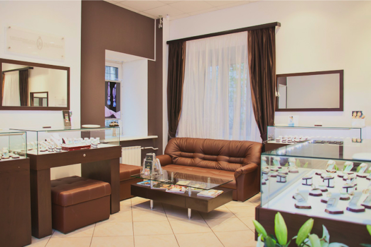
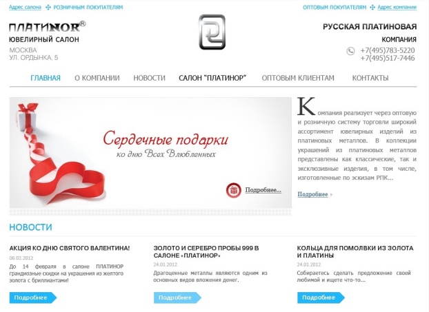
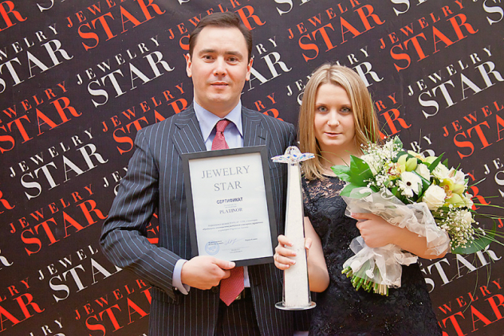
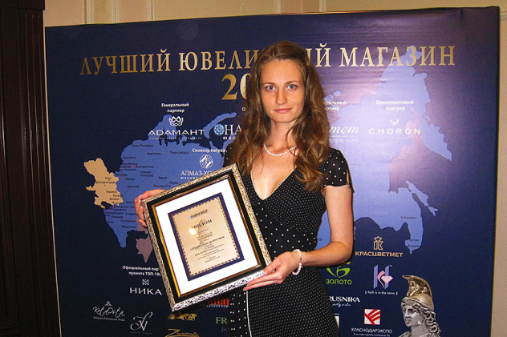
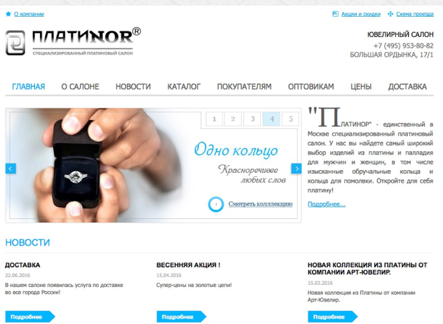

Платинор был открыт как розничное подразделение «Русской Платиновой Компании», работающей с 2002 г. и занимающейся оптовой торговлей ювелирными изделиями из всех драгоценных металлов.
За шесть лет работы компании спрос на украшения из платины и палладия вырос настолько, что руководством было принято рискованное решение о создании уникального салона, аналогов которому нет на рынке. Для консультаций были приглашены британские эксперты из компании «Johnson Matthe», имеющие многолетний опыт работы с платиновыми металлами.
Свершилась первая продажа ювелирного украшения в салоне «Платинор». Торговое пространство было открыто в обычном доме, где жила и работала в свое время знаменитая поэтесса Анна Ахматова. Этот дом находится в центре Москвы, в Замоскворечье, на старейшей улице – Большой Ордынке. Справа от входной двери в салон располагалась мемориальная доска поэтессе, а если посмотреть налево, то можно было увидеть радужные купола Храма Василия Блаженного. Это было особое место, которое горячо любили и все сотрудники компании, и гости салона. Именно здесь началась эпоха доступных украшений из платиновых металлов.

Название «ПлатиNor» было собрано из слов платина и Норильск. Ведь именно этот город является главным добытчиком платиновых металлов на территории Российской Федерации. В этом же году был зарегистрирован одноименный товарный знак за номером 269157.
На тот момент крупнейшим производителем ювелирных украшений из платины и палладия был Красноярский завод цветных металлов имени В.Н. Гулидова, главным дилером которого являлась «Русская Платиновая Компания». Первоначально ассортимент салона был практически полностью составлен из продукции этого старейшего предприятия, основанного в 1939 году. В дальнейшем на витринах стали появляться изделия и других российских компаний, таких как «АлмазХолдинг», «Ювелирный дом г. Екатеринбург», «Грингор», «Грейс», «Арт-Ювелир» и другие. Так же ассортимент расширили украшения из золота и серебра.
Появилась первая версия сайта с каталогом украшений и большим количеством информации о платиновых металлах. Компании пришлось развернула большую рекламную деятельность для популяризации изделий из платины и палладия на территории России. Были размещены статьи в газетах и журналах, давались объявления на различных информационных интернет-порталах. Украшения салона выставлялись на самых крупных российских ювелирных выставках. Компания всячески стремилась открыть мир платины для всех потребителей драгоценностей. Отсюда и появился фирменный слоган – «Открой платину!».

Компания успешно развивалась и года стала обладателем премии «JEWELRY STAR» в номинации «Салон-новатор». Награждение Первой профессиональной премией за продвижение ювелирных брендов прошло в Третьяковской галерее. Статуэтку в виде звезды на подставке из муранского стекла победителю вручил председатель Гильдии ювелиров России Моспан В.И.

Салон победил в ежегодной премии "Лучший ювелирный магазин". Отраслевой журнал "Навигатор ювелирной торговли" удостоил специальной награды "За высокий уровень культуры и организации продаж". Вручение всероссийской премии торжественно прошло в московской гостинице "Корстон".

По многочисленным просьбам клиентов сайт салона был переделан и заработал уже как полноценный интернет-магазин с доставкой украшений по всей России. Вместе с первыми покупателями была налажена система оформления заказов, выбрана надежная курьерская служба и разработана технология работы с интернет-заказами. Первая посылка отправилась 30 июня 2016 года с двумя обручальными кольцами из палладия в город Санкт-Петербург.

Салон открыл свои двери уже в новом пространстве – современном и удобном для посетителей Fashion & Beauty Cluster EMIVI на Баррикадной. Расположение на Садовом кольце, тихая шоурумная атмосфера и наличие паркинга в здании пришлись по вкусу постоянным и новым клиентам
С переездом немного поменялась и концепция салона. Изделия из золота и серебра массового производства были заменены эксклюзивными и авторскими украшениями. Теперь на витринах можно встретить настоящие шедевры ювелирного искусства и некоторые клиенты приходя в салон говорят, что попали в музей.
Вместе с тем поменялись и запросы покупателей, поэтому компания стала выпускать свои собственные модели украшений и больше принимать заказов на изготовление по индивидуальному эскизу. Так ассортимент стал делиться на коллекции и линейки, появились украшения с бриллиантами фантазийных огранок, таких как квадратная принцесса, каплевидная груша, прямоугольный багет и другие. А так же выделилась линейка украшений без вставок – «Чистая платина».
Салон становится торговой площадкой для молодых и малоизвестных брендов. Первым из них стала ювелирная мануфактура «Кремлевские Мастера», которая представила две премиум-коллекции из платины и из золота с уникальными вставками. С 2019 года семейная мастерскаяPalladinGoldэксклюзивно представлена в «Платинор» с украшениями из запатентованного сплава палладий 950. С 2020 года на витринах можно найти неповторимые творения с потрясающими камнями молодого дизайнера, геммолога Valentyna Alb.